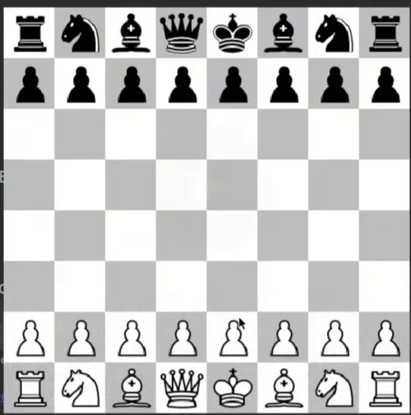

Goldman Jiao
Hi!
I am Goldman and I am currently studying Mathematics and Statistics at University of Warwick! I have an interest in AI and am currently learning about the applications and fundamentals at university taking more machine learning and data science modules. Check out the source code at MY GITHUB Other projects include RESTful API for an online store, Google chrome extention for Dark/Light mode alternator and Blackjack.
Projects
Chess AI
MiniMax search algorithm using Alpha-Beta pruning to make it more efficient. Developing a Chess AI and GUI interface using Python. Able to highlight valid moves for each piece when clicked and restrict them to moving in those valid moves, extended to En-Passant and Castling.
News article fetcher

News searching application using Web Scraper Fetch API to return highest ranked searches in JSON format of the user input. Displayed on particle animated canvas to increase interactivity.